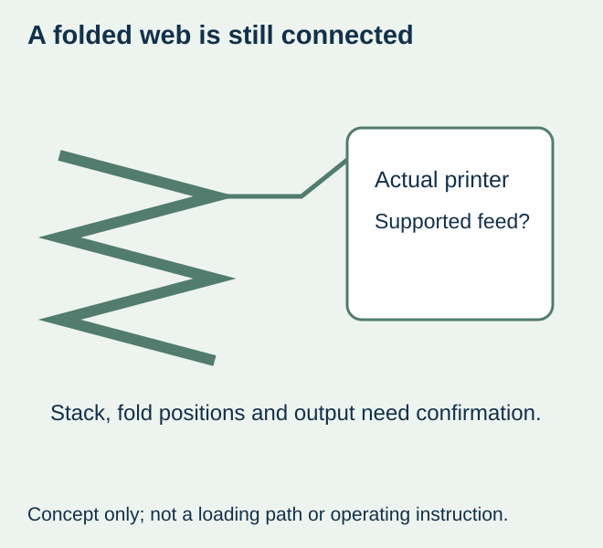
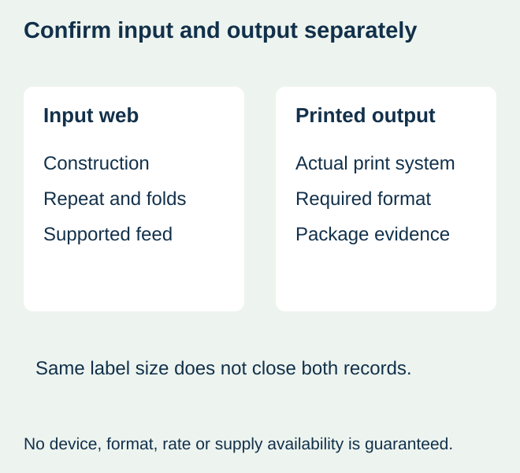

A food packer finds folded label media and assumes it can replace the usual roll because the label dimensions are the same. The box sits outside the printer, but the team has not confirmed an external-feed route, the fold layout or how the printed output will be handled. The quoted size answers only part of the supply question.
Confirm the actual printer configuration supports the proposed fanfold construction and its continuous feed before ordering. Fanfold is a connected web held in a folded stack. It is not a pile of independent sheets, and it does not automatically become compatible because a machine has a rear opening or a familiar brand name.


Three formats describe different physical inputs
| Supply | Physical input | First compatibility question |
|---|---|---|
| Wound roll | Web carried on a core or another agreed roll arrangement | Does the printer accept the actual roll and media? |
| Fanfold stack | Connected web folded at identified positions | Is the proposed external stack/feed arrangement supported? |
| Loose sheets | Separate sheets fed by an approved sheet process | Does the actual device accept that sheet product and format? |
These are format descriptions, not recommendations that one is faster or cheaper. A supported fanfold route can remove a core-size question from that particular external supply, but it introduces the actual stack, feed and folding arrangement. It does not remove media construction, sensing, width or printing requirements.
Use the model instructions as the boundary
Brother’s fanfold-label instructions for its listed TD models describe an external stack and rear feed within a specific printer procedure. That primary example shows why model and handling configuration matter. It is not permission to copy its arrangement or dimensions to another printer, and this guide does not reproduce loading or modification instructions.
Ask the printer owner to identify the relevant current manufacturer instructions and any installed option affecting the job. Do not route a web through an opening, remove a guard or change a feed path based on an editorial drawing. The supply specification must reflect the supported arrangement the responsible equipment owner confirms.


Place the folds on the actual repeat drawing
Obtain the proposed label repeat and identify where each fold occurs. Keep label boundaries, backing, gaps or marks and fold positions distinct. A stack height or total label count does not show which parts of the label construction will bend at a fold. If a separation feature is proposed as well, identify it explicitly instead of assuming every fold is a tear line.
Ask whether the actual media and supplied layout are intended for that handling route. Record any mismatch or unknown before accepting the quote. A hand-folded strip can explain the concept, but it is not evidence that the converted construction feeds or produces the required output.
Keep the printing method and final output separate from the stack
Fanfold describes how the web is supplied, not whether it is direct thermal, thermal transfer or another supported printing system. The thermal-workflow guide keeps media and ribbon requirements identifiable. A folded supply does not make an unsuitable print surface or ribbon compatible.
For a hypothetical bakery packing task, the required result may be individual printed labels for hand application. Another operation may require a particular output arrangement for its next approved step. Confirm the actual printer configuration and output requirement rather than assume an external stack can feed through every cutter, peeler or rewind workflow.
Use representative data and the required label size in the agreed output evaluation. If the task requires a barcode quality result, obtain the relevant verification; a successful feed or phone scan does not establish it. Package attachment and later image life also remain separate evidence questions.
Compare the work and stock the proposal actually creates
A fanfold box needs an identified place, known material and a workable route under the equipment instructions. Include relevant changeover, storage protection, remainder identity and output handling in the comparison. Ask for actual quantities and terms. No saving, uninterrupted run time or higher capacity is inferred from a stack photograph.
For a small trial, compare the supported formats available to the printer and the real packing task. If no supplier or equipment evidence supports the proposed folded web, keep it unresolved and retain a confirmed route. Do not try to make a rolled product into fanfold by improvising folds.
Order the confirmed construction and format together
Retain the printer configuration, media reference, repeat/fold drawing and accepted output with the order. A later change in stock or folding layout should be reviewed against that actual evidence. The format-work comparison addresses manual packing labour; this article addresses the printer’s continuous external input and its output boundary.
This site does not promise fanfold conversion, a particular printer-compatible grade or equipment support without confirmation. An inquiry can identify the requirement and ask whether a supported supply or a separately specified alternative is available for the food-label project.
Discuss the unresolved label requirement
Provide printer make/model and installed handling configuration, proposed folded-web construction and drawing, label size/repeat, fold positions, quantities and required printed output. Include the actual food package and whether labels will be hand applied or used in another approved process. Review the food-label product scope and prepare a label specification inquiry. The contact page opens an email draft and lists email or WhatsApp for attachments. Supply, proof options, testing, pricing and timing require project confirmation.